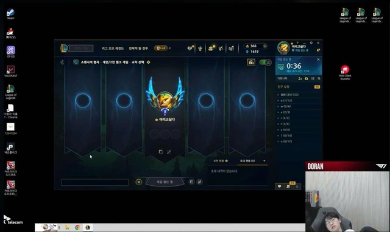
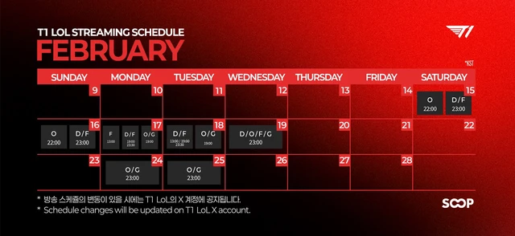
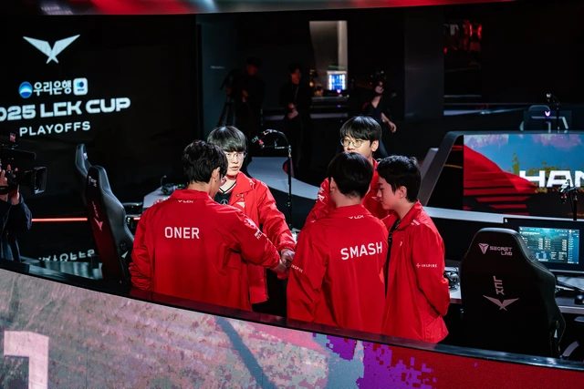

Động thái mới của Doran trên stream đã tự chứng minh một lý do khiến Zeus rời T1
Một hành động nhỏ của Doran nhưng có thể làm rõ một trong số những lý do khiến Zeus rời T1.
Một động thái của Doran nhưng lại làm liên tưởng drama T1 - Zeus
Như đã biết, bên cạnh các yếu tố về lương thưởng và điều khoản hợp đồng, một trong những thông tin từng được agency của Zeus tiết lộ khi anh rời T1 là vì tuyển thủ này kỳ vọng sẽ được nghỉ ngơi nhiều hơn thay vì các lịch stream liên tục. Thời điểm đó, yếu tố này đã khiến không ít fan T1 phẫn nộ, nhất là những người thường xuyên donate cho các tuyển thủ. Nhưng mới đây, chính tân binh Doran lại có hành động khẳng định lời từ phía Zeus là có phần hợp lý.

Theo đó, ngay trong lúc stream, Doran vì quá mệt mỏi nên đã ngủ gục luôn trên sóng. Nhiều ý kiến khán giả trên kênh chat lúc đó cũng đề nghị tuyển thủ nhà T1 nên tắt stream nghỉ ngơi. Nhưng vì chưa xong buổi stream theo lịch nên sau đó Doran vẫn tỉnh giấc và tiếp tục công việc của mình.
Sau hành trình LCK Cup 2025, các tuyển thủ T1 phải quay lại với lịch stream thường nhật. Đáng nói, dù là tân binh nhưng có lẽ T1 muốn tăng độ nhận diện của Doran nên anh có lịch stream dày nhất trong số các thành viên, với 5 ngày liên tiếp (từ 15-19/02). Đặc biệt, trong ngày 18/02 thì Doran lên sóng ở cả 3 khung giờ theo lịch.
Nhiệm vụ không thể tránh khỏi khi gia nhập T1
Với những tuyển thủ đã quá quen với lịch làm việc dày đặc của T1, việc livestream liên tục trong nhiều ngày là chuyện hoàn toàn dễ hiểu. Tuy nhiên, Doran là tân binh nên việc anh kiệt sức cũng là chuyện bình thường. Chưa kể, thời gian trước đây T1 bị DDoS, lịch livestream đã ảnh hưởng ít nhiều và bây giờ các tuyển thủ phải "vắt sức" cũng là dễ hiểu.
Dù vậy, vẫn có không ít ý kiến thừa nhận điều này cũng phần nào giải thích việc Zeus ra đi vì không muốn có lịch làm việc quá dày đặc cũng có thể thông cảm. Chính Doran cũng từng là cựu thành viên của HLE. Và nếu tại đội tuyển cũ cũng tương tự như T1, có lẽ anh đã không rơi vào tình trạng kiệt sức như thế này.